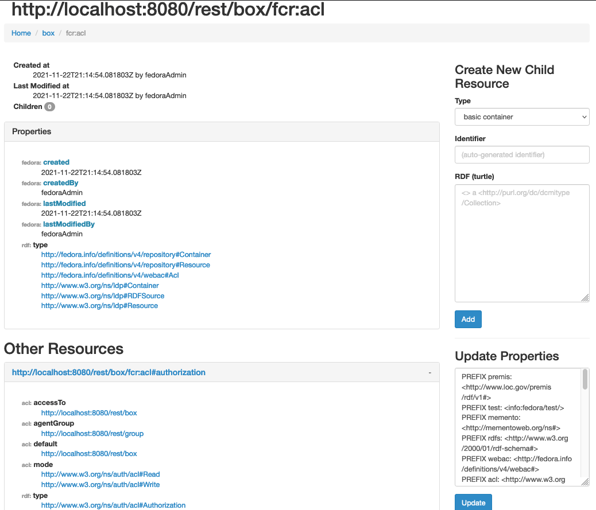

At the very least, the root acl would display in F5
FCREPO-3423 ACLs not displayed properly
| Type | Bug |
|---|---|
| Status | Open |
| Priority | Minor |
| Reporter | Peter Winckles |
| Created | 2020-09-12 12:40 UTC |
| Updated | 2024-01-11 21:32 UTC |
| Components | f4-core |
| Affects versions | Fedora 6.0.0 |
| Is related to | FCREPO-3424 Repository root is missing its root acl |
Description
ACLs are not displayed properly in the web view. If you navigate to an ACL in the web view all of its properties are empty.
Attachments
- screenshot-1.png, 124612 bytes, added by Peter Winckles on 2020-11-18
- Screen Shot 2021-11-22 at 3.18.34 PM.png, 177308 bytes, added by Jared Whiklo on 2021-11-22
Comments (4)
Peter Winckles, 2020-11-18 14:41 UTC
Andrew Woods, 2020-11-19 00:16 UTC
When I create and ACL and navigate to it in the HTML UI, I am seeing the ACL content and properties. This appears to no longer be an issue.
Steps:
- mvn jetty:run -pl fcrepo-webapp/
- curl -XPUT -u fedoraAdmin:fedoraAdmin localhost:8080/rest/box -i
- curl -XPUT -u fedoraAdmin:fedoraAdmin -H"Content-Type: text/turtle" --data-binary @acl.ttl localhost:8080/rest/box/fcr:acl -i
- Where acl.ttl is:
```
@prefix acl: <http://www.w3.org/ns/auth/acl#>.
<#authz> a acl:Authorization;
acl:accessTo </rest/box>;
acl:agent "user1";
acl:mode acl:Read.
``` - Open browser to: http://localhost:8080/rest/box/fcr:acl – all good
Jared Whiklo, 2021-11-22 21:20 UTC
Tested with https://github.com/fcrepo/fcrepo/commit/058e670df1f54a7f6c8ddd6e4d7db6acf0ffd4a9 and it seems to work.

ACLs were never managed/displayed via the HTML UI in Fedora 5 and before. This is a good idea but I'd suggest it is an improvement and not a bug which can be done after Beta.